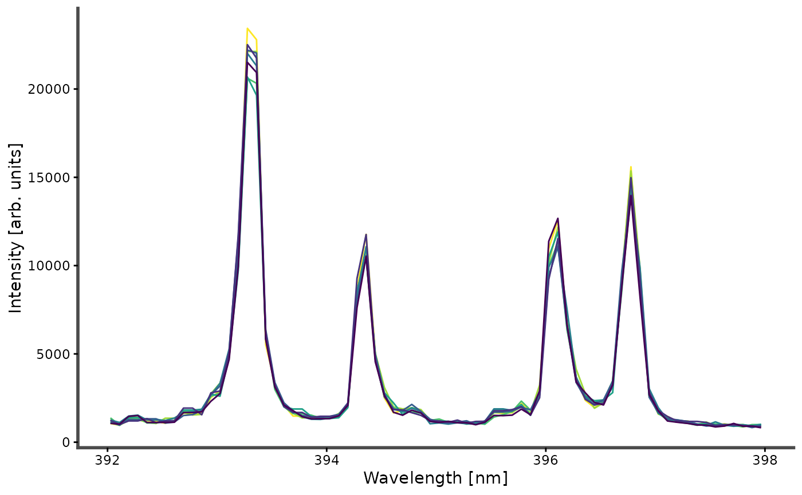

Laser-induced breakdown spectroscopy (LIBS) spectra of 50 soil samples, each measured at 8 locations (400 spectra in total), together with the particle-size distribution (clay, sand and silt content) and texture class of each sample.
Format
A tibble with 400 rows and 7160 columns:
- Sample
Sample identifier (50 samples).
- Location
Measurement location on the sample (1 to 8).
- Clay, Sand, Silt
Particle-size fractions, in percent.
- Texture
USDA soil texture class (factor).
- Structure
Texture structure: coarse to fine (factor).
- Type
Broad soil type: Clay, Loamy or Sandy (factor).
- 199.3771616, ..., 822.1849
Emission intensity (counts) at each wavelength, in nm. The column names are the wavelengths.
Details
The spectra cover 199.4 to 822.2 nm in 7152 channels (about 0.084 nm per channel) and are raw detector counts (integers, no background subtraction or normalization). They are recorded by several spectrometers whose ranges are concatenated, which has two consequences for analysis:
The channels are in increasing wavelength order except at one boundary near 766 nm, where two spectrometers overlap by about 0.43 nm.
There are gaps between 781.5 and 789.2 nm and between 800.7 and 813.9 nm.
The 8 spectra of a sample are repeated measurements of the same material,
so they are not independent observations. Average them with
average() before modeling sample properties, or keep all locations
together when splitting the data into calibration and validation sets, to
avoid over-optimistic estimates of prediction error.
Prominent emission lines include Mg II 279.55/280.27 nm, Si I 288.16 nm, Ca II 393.37/396.85 nm, Al I 394.40/396.15 nm and Na I 588.99/589.59 nm.
Examples
data(specLIBS)
dim(specLIBS)
#> [1] 400 7160
table(specLIBS$Type) / 8 # samples per soil type
#>
#> Clay Loamy Sandy
#> 6 37 7
# Ca II doublet of the first sample, all 8 locations
wl <- as.numeric(names(specLIBS)[-(1:8)])
keep <- names(specLIBS)[-(1:8)][wl > 392 & wl < 398]
plot_spectra(specLIBS[1:8, c("Location", keep)], id = Location)
